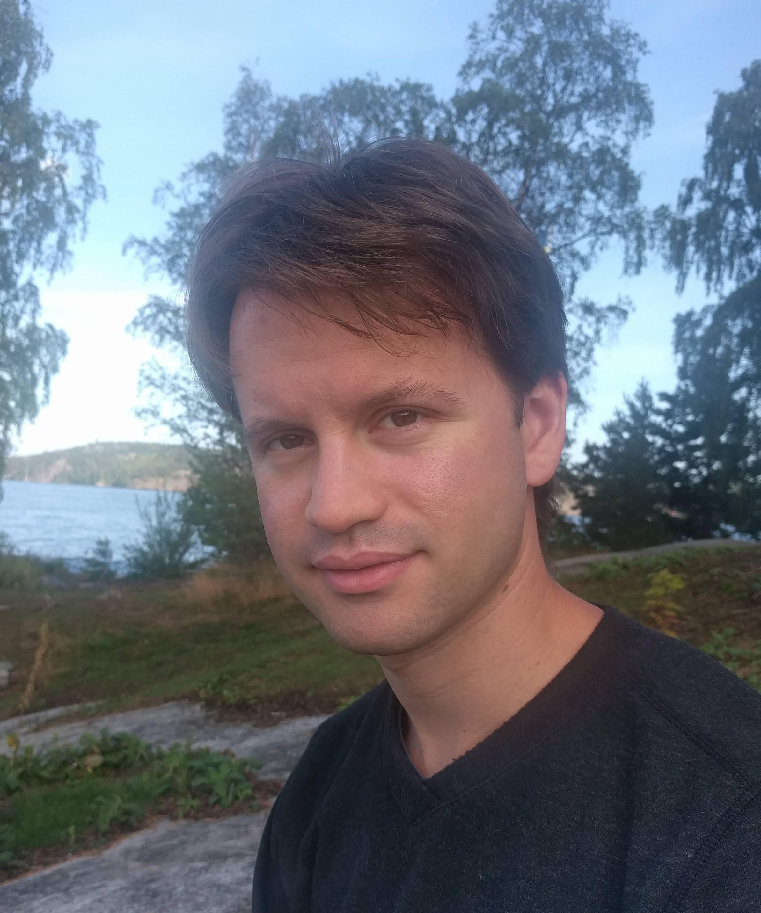

About me

My name is Guillaume Brunerie and I’m a game developer at ELK Studios in Stockholm since October 2020.
You can try out ELK Studios’ games here and play my other games (developed independently) on my itch.io page. Finally, you can find some of my other projects on my GitHub page.
I was previously doing research in mathematics/computer science, focusing on homotopy type theory, a field combining mathematics (in particular homotopy theory, category theory, and constructive mathematics) with computer science (in particular type theory, logic, and proof assistants).
I was a postdoc at Stockholm University from 2018 to 2020, a postdoctoral member of the Institute for Advanced Study in Princeton, New Jersey, USA from 2016 to 2018, and a PhD student at the University of Nice Sophia Antipolis in France from 2013 to 2016.
(last updated in March 2021)Academia
CV
You can find my academic CV here.
PhD thesis
From September 2013 to August 2016, I was a PhD student at the Laboratoire J.A. Dieudonné under the supervision of Carlos Simpson. I successfully defended my thesis on June 15th 2016.
- On the homotopy groups of spheres in homotopy type theory (187 pages, in English, with a 20-page summary in French at the end). You can also download the slides of the oral presentation and the poster (in French, 2015).
Publications
- The James construction and œÄ4(ùïä3) in homotopy type theory. Guillaume Brunerie. Journal of Automated Reasoning, Special Issue on Homotopy Type Theory and Univalent Foundations, Springer. doi:10.1007/s10817-018-9468-2.
- A Cubical Approach to Synthetic Homotopy Theory. Dan Licata and Guillaume Brunerie. 2015 30th Annual ACM/IEEE Symposium on Logic in Computer Science (LICS 2015), pages 92–103, IEEE. doi:10.1109/LICS.2015.19.
- πn(Sn) in Homotopy Type Theory. Dan Licata and Guillaume Brunerie. Certified Programs and Proofs (CPP 2013), volume 8307 of Lecture Notes in Computer Science (LNCS), pages 1–16. Springer. doi:10.1007/978-3-319-03545-1.
Preprints and other writings of interest
- Cartesian Cubical Type Theory. Carlo Angiuli, Guillaume Brunerie, Thierry Coquand, Kuen-Bang Hou (Favonia), Robert Harper, Daniel R. Licata. Preprint.
- The Steenrod squares in homotopy type theory (extended abstract). Guillaume Brunerie. TYPES 2017
- Homotopy Type Theory: Univalent Foundations of Mathematics. The Univalent Foundations Program (collective book), Institute for Advanced Study, 2013
Slides of talks
- Initiality for Martin-Löf type theory, with Peter Lumsdaine (slides are for my part only), HoTTEST Seminar, September 2020
- A formalization of the initiality conjecture in Agda, Homotopy Type Theory 2019 Conference, Carnegie Mellon University, Pittsburgh, Pennsylvania, August 2019
- Formalization in Agda (part I only), Homotopy Type Theory 2019 Summer School, Carnegie Mellon University, Pittsburgh, Pennsylvania, August 2019
- Computer-generated proofs for the monoidal structure of the smash product, HoTTEST Seminar, November 2018
- Experiments in cubical type theory, Joint Mathematics Meetings, AMS Special Session on Homotopy Type Theory (a Mathematics Research Communities Session), San Diego, California, January 2018
- Homotopy type theory: working invariantly in homotopy theory, Short talks by postdoctoral members, School of Mathematics, IAS, Princeton, New Jersey, September 2017
- Invariant homotopy theory in the univalent foundations, Short talks by postdoctoral members, School of Mathematics, IAS, Princeton, New Jersey, September 2016
- Custom definitional equalities in Agda, in the “Univalent Foundations and Proof Assistants” session of the International Congress on Mathematical Software (ICMS 2016), Berlin, Germany, July 2016
- A Cubical Approach to Synthetic Homotopy Theory, at LICS 2015, Kyoto, Japan, July 2015
- Homotopy Type Theory, at the conference “Journées francophones des languages applicatifs”, Fréjus, France, January 2014
- An elementary definition of weak ∞-groupoids, in the session “Progress in Higher Categories” of the CMS Summer Meeting, Halifax, Nova-Scotia, Canada, June 2013
- Le théorème de complétude de Gödel (in French), in the “Séminaire de mathématiques des élèves du lycée Louis le Grand”, Paris, France, February 2009
Videos of talks
- Initiality for Martin-Löf type theory, together with Peter Lumsdaine (my part starts at 36:05), for the electronic seminar HoTTEST, September 2020
- Computer-generated proofs for the monoidal structure of the smash product, for the electronic seminar HoTTEST, November 2018
- Homotopy type theory: working invariantly in homotopy theory, Short talks by postdoctoral members, School of Mathematics, IAS, Princeton, New Jersey, September 2017
- Invariant homotopy theory in the univalent foundations, Short talks by postdoctoral members, School of Mathematics, IAS, Princeton, New Jersey, September 2016
- The fourth homotopy group of the three-dimensional sphere), at the “Workshop on Homotopy Type Theory and Univalent Foundations of Mathematics, Fields Institute, Toronto, Ontario, Canada, May 2016
- Homotopy Theory in Type Theory, with Dan Licata and Peter Lumsdaine, at the seminar of the Institute for Advanced Study, Princeton, New Jersey, April 2013
- The James construction and π4(S3), at the seminar of the special year of the IAS, Princeton, New Jersey, March 2013
- π2(S2) in HoTT, at the seminar of the special year of the IAS, Princeton, New Jersey, February 2013
- Weak infinity-groupoids, part I (no video for part II), at the seminar of the special year of the IAS, Princeton, New Jersey, January 2013
Others writings
- A Python script generating Agda code for semi-simplicial types, truncated at any given level (script, result for n = 10)
- Structure topologique de l’espace des réseaux unitaires, initiation to research on the proof that the space of unitary lattices of ℝ2 is homemorphic to the complement of the trefoil knot in S3 (in French, 2009).
- Densdisigeblaj spacoj, a proof of a theorem in point-set topology: every metric space without isolated points can be partitioned in two dense subspaces (in Esperanto, 2008).
Contact
You can contact me by email at the address guillaume.brunerie@gmail.com (or guillaume.brunerie@elk-studios.com for emails related to ELK Studios).